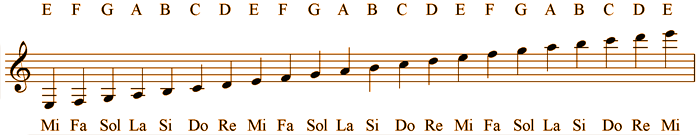

Telli Müzik Aletleri
Tellerin titreşmesiyle çeşitli şiddetlerde , yüksekliklerde ve niteliklerde sesler meydana gelir. Teller ince ve kalın olurlar. Belli başlı telli sazlar : Mandolin, keman, gitar, bağlama, ut, kanun, viyolonsel ve arptır. Piyanonun içinde de teller bulunur. Küçük tokmakların tellere vuruşuyla sesler meydana gelir.

Nefesli Müzik Aletleri
Bu sazların içindeki havanın dudaklar tarafından titretilmesinden yararlanılarak yapılmışlardır. Üstlerindeki delikler çeşitli özelliklerde sesler çıkmasına yol açar. Belli başlı nefesli sazlar : Kaval, zurna, flüt, ney, saksafon, klarnet, gayda, obua ve trompettir.
Müzik hαyαtın neşesi, ruhu, sevinci ve her şeyidir.
Yaylı Müzik Aletleri
Yaylı çalgılar, yayın tel üstünde kaydırılarak titreşim yoluyla ses oluşturulmasını sağlayan çalgı topluluğudur. Yaylı çalgılar orkestrada kendine özgüye sahiptir. Orkestrada 1. ve 2. kemanlar, viyolalar, çellolar ve kontrabaslar yaylılar olarak adlandırılır. Bütün klasik müzik bestecileri yaylıları kullanmıştır.

Tuşlu Müzik Aletleri
Tuşlu çalgılar, temel anlamda icracının klavye adı verilen tuşlarla enstrümanı kontrol ettiği çalgıların tümüne verilen ortak addır. Aynı anda birden fazla ses çıkarabilen çok sesli (polifonik) enstrümanlardan olan tuşlu çalgıların icrasında parmak kontrolü önemli bir yer taşımaktadır.

Vurmalı Müzik Aletleri
Bu sazlardaki gerilmiş derilere ya da ince madeni levhalara vurularak titreşimler meydana getirilir. Belli başlı vurma sazlar : Davul, trampet, zil, tef ve darbukadır.